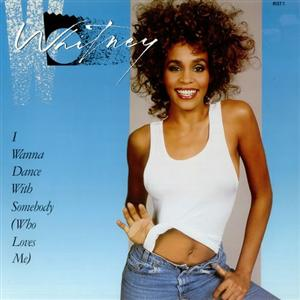
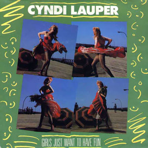
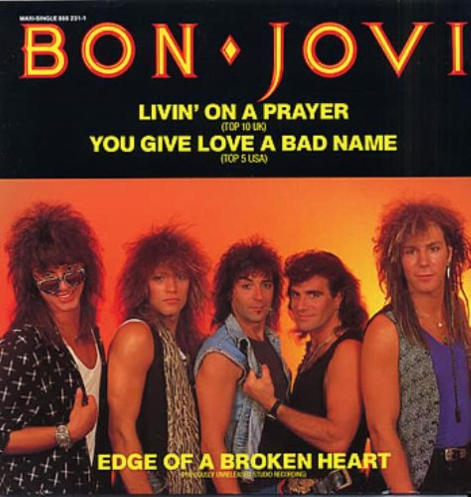
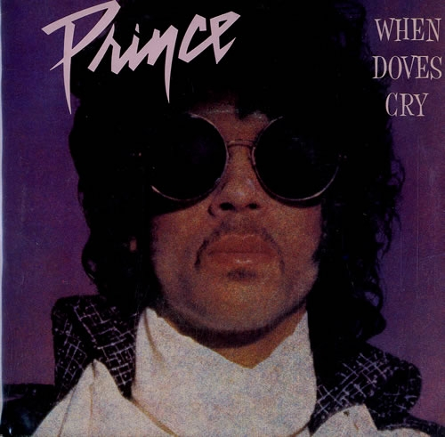
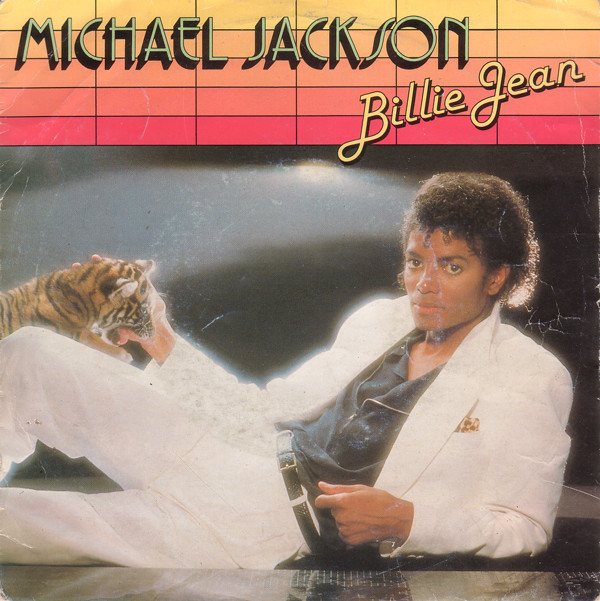
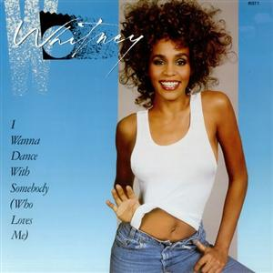
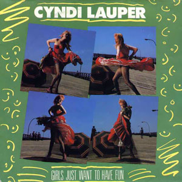
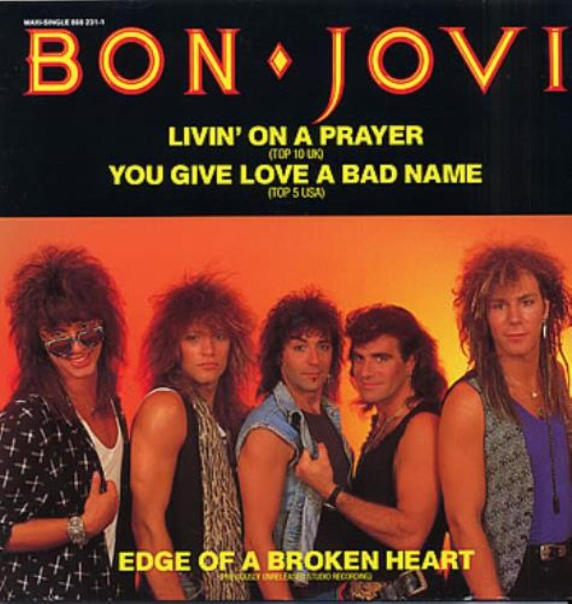
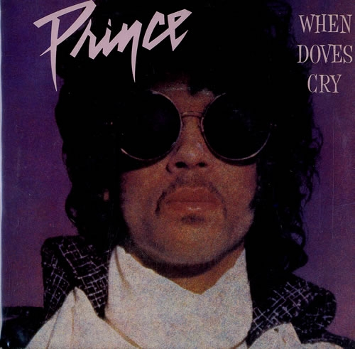
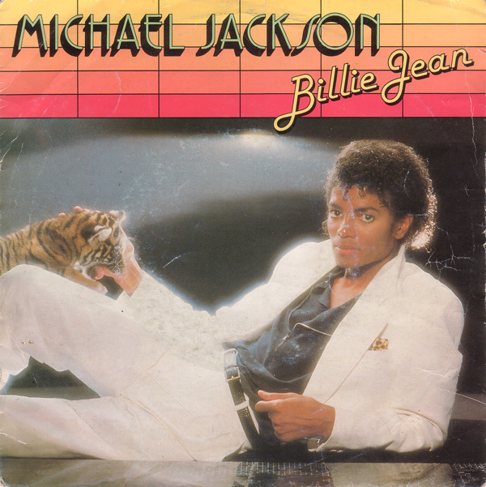

Popular Songs of the Century Popular Artists of the Century
Without a doubt, the 80s was an awesome time for music. Legends were created. Everyone was dancing and having fun with the help of music. In fact, if you were to hear the sounds of huge reverby snare drums, lots of delays on vocals, electronic rhythms and synthesizers. There was a wide variety of music to listen to. Whatever you felt like, there was a type of music to match. The most popular genres of the 80s were: electropop, rock (alternative and classic), disco (Euro, Italo, post-disco), new wave, punk, golden age hip hop and eurodance.
 









Aside from these songs becoming infamous, it also launched the singers of these songs into stardom and transformed into Hollywood Icons.